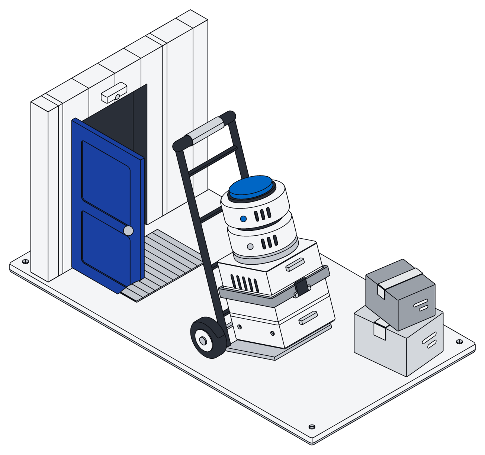

We wrote one line at the top of our home page and kept coming back to it: Own your data infrastructure. Database. File storage. Agent access. A foundation for your digital world, built to run on your terms.
This post is about why that line matters, and what it asks of a product that wants to deserve it.
What your company knows is scattered
Picture a twelve-person design agency. Client briefs arrive by email. Contracts live in a shared drive. The decision to move a launch date was made in a chat thread on a Tuesday afternoon. Invoices sit in the accounting tool, leads in the CRM, and the reasons behind half of it in someone's notebook.
Each tool holds a piece, and each piece is useful on its own. But ask a simple question, like "what did we promise this client in March, and did we bill for it?", and the answer is spread across five places with five search boxes, five sets of permissions and five ideas of what a client even is.
That was already a problem for people. It is a bigger one now that every team also works with an AI assistant. ChatGPT, Claude, Gemini and Grok are remarkably capable, and they know nothing about your business unless you hand it to them, one pasted paragraph at a time.
The most valuable thing your company owns is what it knows. Too often, it is only renting a place to keep it.
One place, shaped like your business
Archive gives that knowledge a single home. It brings three things together that usually live apart:
- Your records: your own lists, shaped the way your business works. Clients, projects, properties, invoices, whatever you track, each with the fields you need and links between them.
- Your files: documents, spreadsheets, slides and PDFs, stored next to the records they belong to. Your AI can edit Word, Excel and PowerPoint files in place, and pages let people and AI write together live.
- Agent access: a way for the AI you already use to search, read and file information in your workspace, under the same rules as everyone else.
You do not have to give up the tools your team likes. Read-only connectors bring in copies of your mail, files, chats and CRM data and keep them current, without ever changing anything at the source. The agency keeps its inbox and its chat. It just stops losing what happens in them.
Every person, and every AI you choose
Having everything in one place only helps if the right people can use it, and only the right people. Think of a small property manager. Owners should see their own buildings and nothing else. The maintenance contractor needs work orders, not rent ledgers. Finance needs the ledgers, not tenant chats.
In Archive, every record belongs to a space, and you decide who can see and change what in each one. Those rules hold everywhere: in the app, on a phone, and for every AI assistant you connect. An assistant working for the contractor sees exactly what the contractor sees.
Which assistant is up to you. Archive works with ChatGPT, Claude, Gemini and Grok, and it does not lock you into one of them. If your team prefers a different assistant next year, the knowledge does not move. Only the assistant changes. And when an assistant makes changes, they are all-or-nothing, so nothing ends up half done.
Yours to take with you
Ownership is easy to claim and easy to test: can you leave?
Archive keeps your records in a standard, widely used database rather than a format only we can read. Your files stay ordinary files. The way your workspace is organized can be written out as plain text and applied again somewhere else. Nothing about your knowledge depends on staying with us.

We think that makes us a better product, not a riskier one for us. A tool you can leave is a tool that has to keep earning its place.
Control means decisions, not settings
"Control" often ends up meaning a toggle buried in someone else's admin screen. We mean something plainer. With Archive, the decisions that matter are yours:
- What comes in. You choose which mailboxes, drives and tools to connect, and you can disconnect them.
- How it is organized. You shape your records to fit your business, and change that shape whenever the business changes.
- Who sees it. People and AI assistants get exactly the access you give them.
- Which AI works with it. Bring the assistant your team already trusts, or several.
- Where it goes. Take everything with you if you ever want to.
Those are the terms. They are yours.

A foundation, not another tool
Most software adds one more place to look. We are trying to build the opposite: the place underneath, where your company's knowledge collects and stays useful. Your team works in it directly. Your AI assistants work in it on your behalf. And over time, everything your team files becomes something more: the examples you can use to train a small model that sorts new work the way you would.
The design agency does not need a new habit to get there. It connects its inbox and drive, lets its assistant file the first few hundred records into clients and projects, and invites the team. A week later, the question about March has one answer, in one place, and anyone allowed to ask it can.
That is what owning your data infrastructure looks like in practice. Not another app to check. A foundation you control.